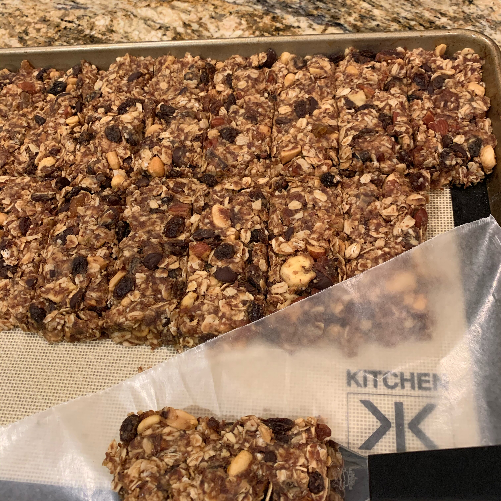

No Bake Granola Bars

The Quick and Easy snack for everybody
This easy recipe will help the busiest moms and dads provide a tasty treat that the whole family will enjoy.
The recipe is so simple even the young ones can be put in charge of completing it.
Ingredients:
- 2 cups rolled oats
- 1 ¼ cups chunky natural peanut butter
- 1 cup ground flaxseed
- ¾ cup honey
- ¾ cup dried cranberries
- ½ cup chocolate chips
- ¼ cup sliced almonds
Directions:
- Stir oats, peanut butter, flaxseed, honey, cranberries, chocolate chips, and almonds together in a bowl; press into a 9x11-inch baking dish, using the back of a spatula to press into a flat layer.
- Refrigerate mixture at least 1 hour.
- Cut into 12 bars and wrap each individually in plastic wrap for storage.